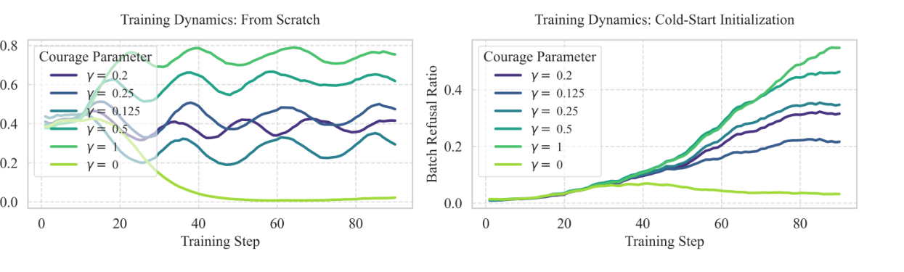
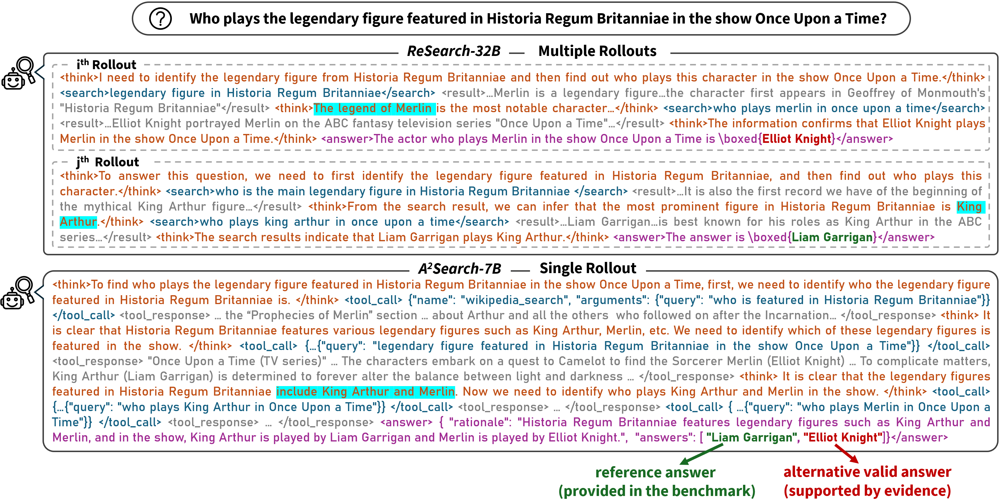
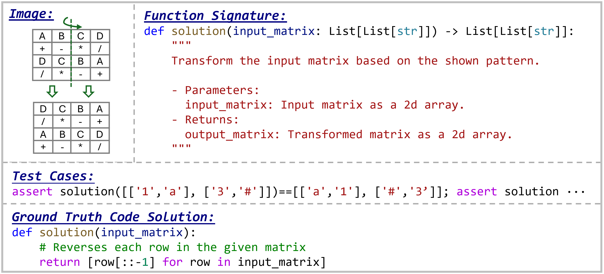
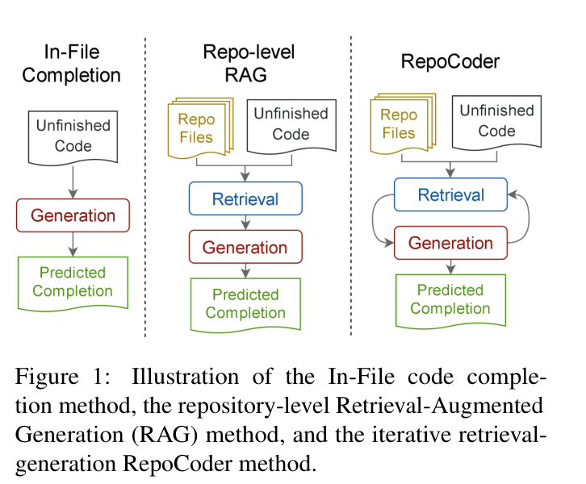
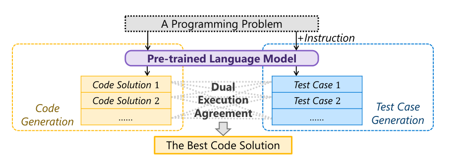

I work on post-training for general-purpose LLM agents.
I train and evaluate LLM agents that search, write code, and use tools. My work ranges from data construction and reinforcement learning to model consolidation and delivery.
Actively looking
LLM post-training roles · Available October 2027
Mainland China · Hong Kong · Singapore
Research Intern
Qwen Foundation Model Team
Post-training for agents, including search and skill use
1.7k+ citations as of Jul 2026 ↗
Internships at Qwen · 01.AI · Microsoft Research Asia
NOW
News
-
Released the AWA-RL preprint and accompanying code.
-
Qwen3.8-Max-Preview is now available.
-
A²Search was published at ICLR 2026 in Rio de Janeiro.
01 / Publications
Research across code, search, evaluation, and post-training.

Figure ↗To Answer or to Abstain: Mitigating Search-Agent Hallucinations via Abstention-Aware Reinforcement Learning
AWA-RL adjusts abstention rewards using a query-specific estimate of the model’s prior capability and the policy’s behavior during training.
Finding When retrieval fails, the better response may be to abstain rather than guess. AWA-RL improves this behavior while preserving the ability to answer when the available evidence is sufficient.

Figure ↗A²Search: Ambiguity-Aware Question Answering with Reinforcement Learning
A²Search turns evidence-verified alternative answers into annotation-free training data and uses an AnsF1 reward to train the agent to recover multiple valid interpretations in one trajectory.
Finding For an ambiguous question, A²Search can return multiple evidence-supported answers in a single trajectory rather than committing to one interpretation.

Benchmark example ↗HumanEval-V: Systematic Evaluation of Visual Reasoning in Large Multimodal Models for Code Generation
Human-authored tasks make visual information essential to the specification, while executable tests check whether models can turn that information into correct code.
Finding Strong multimodal models still struggle with visual patterns that people find simple. Describing a diagram and converting it into correct code remain distinct challenges.
HumanEval-V was used as an evaluation benchmark in the Step3-VL-10B technical report ↗

Figure ↗RepoCoder: Repository-Level Code Completion Through Iterative Retrieval and Generation
RepoCoder alternates between retrieval and generation, using each partial completion to improve the next search for cross-file context.
Finding The relevant repository context is not always found in a single search. A partial completion can help retrieve better context in the next iteration.

Figure ↗CodeT: Code Generation with Generated Tests
CodeT uses the same model to generate candidate programs and tests, then ranks the programs using dual execution agreement rather than model likelihood alone.
Finding Generated tests provide execution evidence for selecting among sampled programs, making test-time sampling more effective.
The GPT-4 Technical Report ↗ includes CodeT + GPT-3.5 as a HumanEval comparison baseline.
02 / Internships
My internship work has covered data construction, evaluation, model training, behavior analysis, and model delivery.
QW
Qwen
Foundation Model Team
Research Intern
I work across the post-training pipeline for general-purpose agents, including data construction and analysis, evaluation, SFT/RL teacher-model training, data and model consolidation, and production-facing agent workflows.
My current work includes Deep Research, adaptive search, and skill calling. Separate academic work during this period includes A²Search and AWA-RL.
01
01.AI
Pretrain & Multimodal
Research Intern
I worked on post-training and evaluation for Yi-VL, developed and evaluated Yi-Coder, and studied test-time scaling with execution feedback for code generation.
I also developed HumanEval-V as a separate academic project during this internship.
MS
Microsoft Research Asia
Data, Knowledge & Intelligence
Research Intern
I proposed CodeT, which uses generated tests for solution selection, and developed RepoCoder, which retrieves cross-file context iteratively for repository-level completion.
TX
Tencent
Interactive Entertainment Group
Engineering Intern
I developed AIOps and internal SaaS tools for online game operations. This was my first experience building systems that had to remain reliable in production.
03 / Beyond research
I grew up in Nanyang, a small city in central China. Outside work, I like exploring unfamiliar neighborhoods on foot or by bike.
I believe AGI will arrive, so I care about how capable models are used, not only what they can do. I try to stay curious, change my mind when the evidence changes, and be generous without expecting an immediate return.
01 Reading
One Hundred Years of Solitude, To Live, and Isaac Asimov’s Foundation series
02 Watching
The Godfather, 2001: A Space Odyssey, The Mandalorian, Before Sunrise, One Piece, and The Lord of the Rings
03 Listening
Ludovico Einaudi, Debussy, AURORA, Cheer Chen, the Eagles, and Bandari
04 Time off
Cycling, cooking, looking for good food, and exploring side streets
Academic service
Peer reviewer
ICSE ’24 · ICLR ’25/’26 · ICML ’26 · NeurIPS ’26 · CVPR ’25 · ICCV ’25 · ACL ’25/’26 · EMNLP ’26
04 / Contact
Open to LLM post-training roles.
I will be available from October 2027 and am seeking roles in mainland China, Hong Kong, or Singapore. I also welcome paper discussions, collaboration inquiries from students and peers, and conversations with potential co-founders.